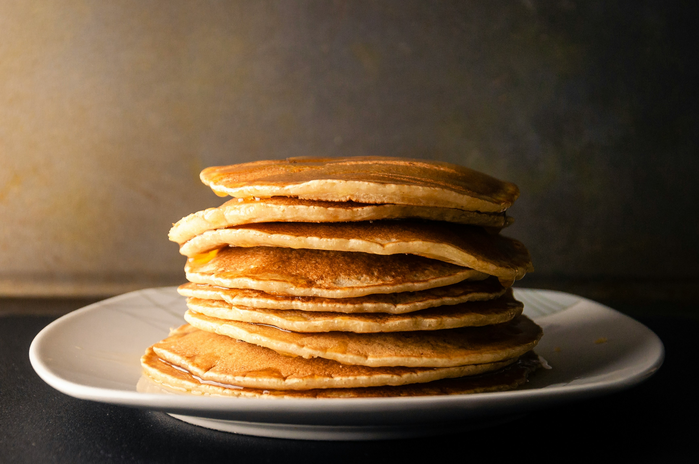

Home
Pancakes

Description
Sift the dry ingredients together.
Make a well, then add the wet ingredients. Stir to combine.
Scoop the batter onto a hot griddle or pan.Cook for two to three minutes, then flip.
Continue cooking until brown on both sides.
When to Flip Pancakes:Your pancake will tell you when it's ready to flip.
Wait until bubbles start to form on the top and the edges look dry and set.
This will usually take about two to three minutes on each side.
Ingredients
- 3 cups all-purpose flour
- 7 teaspoons baking powder
- 2 tablespoons white sugar
- ½ teaspoon salt, or more to taste
- 2 ½ cups milk
- 6 tablespoons butter, melted
- 2 large egg
Steps
- Gather all ingredients.
- Sift flour, baking powder, sugar, and salt together in a large bowl.
Make a well in the center and add milk, melted butter, and egg; mix until smooth.
- Heat a lightly oiled griddle or pan over medium-high heat.
Pour or scoop the batter onto the griddle, using approximately 1/4 cup for each pancake;
cook until bubbles form and the edges are dry, about 2 to 3 minutes.
- Flip and cook until browned on the other side. Repeat with remaining batter.